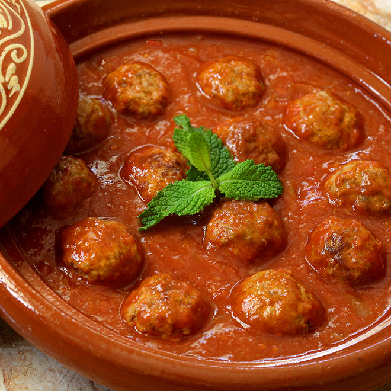

Tajine Met kefta

Ingredienten
- 500 g gehakt (rund of lamsvlees)
- 1 ui (fijngehakt)
- 2 teentjes knoflook (fijngehakt)
- 1 bosje verse peterselie (fijngehakt)
- 1 bosje verse koriander (fijngehakt)
- 1 theelepel komijnpoeder
- 1 theelepel paprikapoeder
- 1 theelepel gemalen koriander
- 1/2 theelepel chilipoeder (optioneel)
- 1 blik tomatenblokjes (400 g)
- 1 theelepel tomatenpuree
- 1/2 theelepel suiker
- 4 eieren (optioneel, voor serveren)
- Olijfolie (voor bakken)
- Zout en peper (naar smaak)
Bereidingen
- Doe het gehakt in een kom en meng het met de fijngehakte ui, knoflook, peterselie, koriander, komijn, paprikapoeder, gemalen koriander, chilipoeder (optioneel), zout en peper.
- Rol het gehaktmengsel tot kleine balletjes (kefta's) en zet opzij.
- Verhit een beetje olijfolie in een tajine of een grote pan op middelhoog vuur.
- Voeg de tomatenblokjes, tomatenpuree en suiker toe aan de pan en roer goed door. Laat het mengsel 10-15 minuten zachtjes koken tot de saus iets indikt.
- Leg de kefta-balletjes voorzichtig in de saus en laat ze ongeveer 20 minuten koken op laag vuur, of totdat ze volledig gaar zijn.
- Optioneel: Maak vier kuiltjes in de saus en breek in elk kuiltje een ei. Laat het gerecht nog een paar minuten sudderen totdat de eieren naar wens zijn gestold.
- Serveer de kefta tajine warm met brood of couscous.